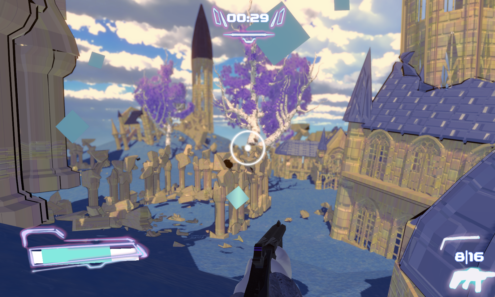

|
Amy Lin I am a senior undergrad at Carnegie Mellon University, working on point cloud diffusion and sparse view pose estimation with Jason Y. Zhang advised by Prof. Shubham Tulsiani. I am interested in machine learning, computer vision, and natural language processing. |
{kind=link}
Publications |
 |
Cameras as Rays: Sparse-view Pose
Estimation via Ray Diffusion
ICLR 2024 Oral Presentation Jason Y. Zhang*, Amy Lin*, Moneish Kumar, Tzu-Hsuan Yang, Deva Ramanan, Shubham Tulsiani project page | arXiv |
|
RelPose++: Recovering 6D Poses from Sparse-view Observations
3DV 2024 Oral Presentation Amy Lin*, Jason Y. Zhang*, Deva Ramanan, Shubham Tulsiani project page | arXiv |
Projects |
|
Brief project centered around learning a latent space for categories of 3D objects using NeRS. |
|
|  |
Multiplayer deathmatch style first person shooter made for WebGL. A Game Creation Society project made with ~15 interdisciplinary students. |

|
Unity Oculus Quest 2 application to measure how a person’s physical intuition in various environments. Independent study at the Augmented Perception Lab. |
|
|